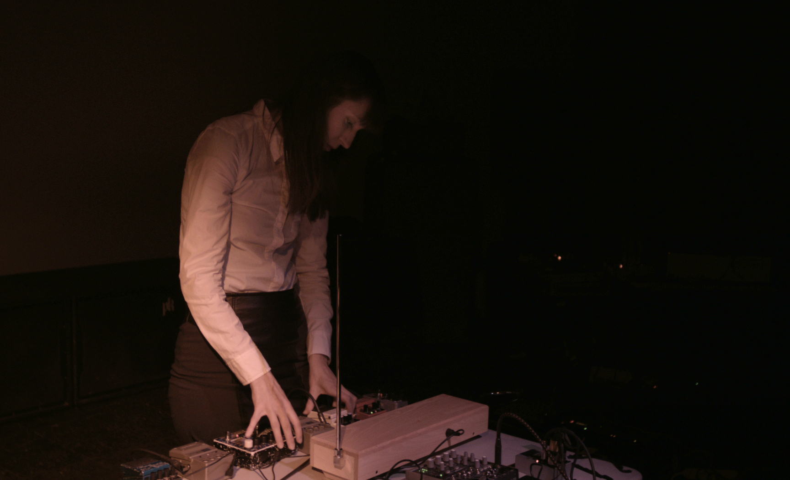
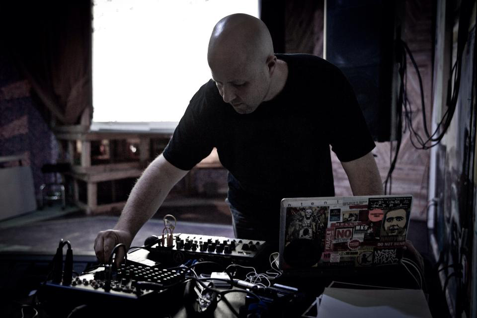
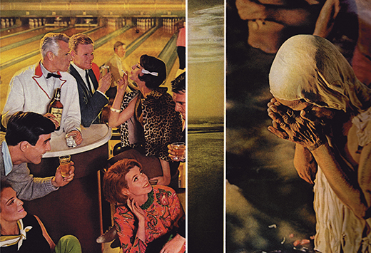
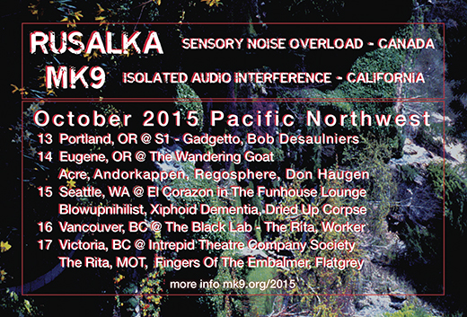
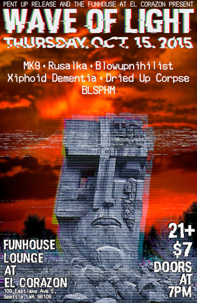
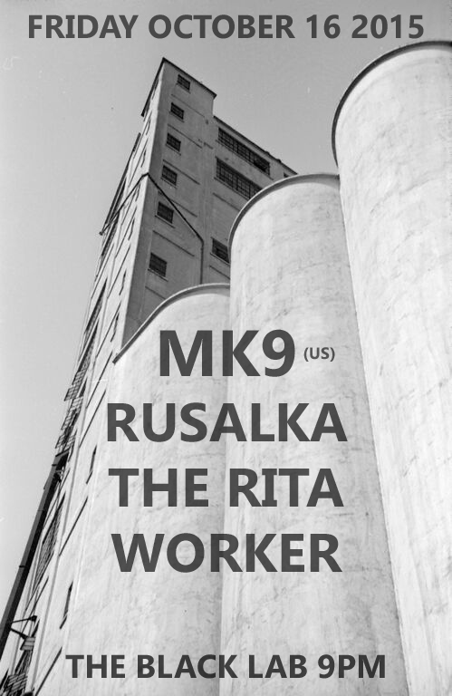
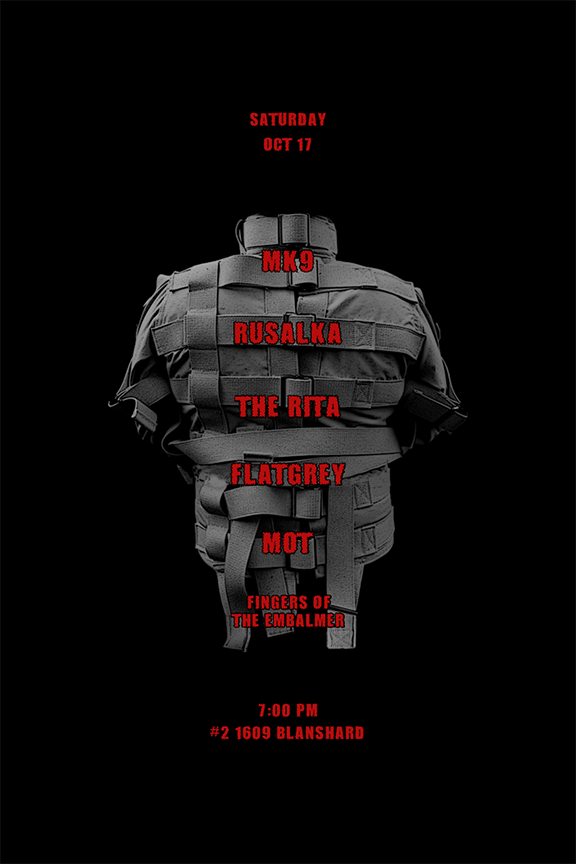
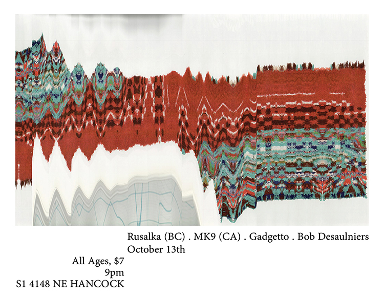

October 2015 - Pacific Northwest - Rusalka and MK9

Rusalka - sensory noise overload [canada] website
Kate Rissiek is a Vancouver based artist performing under the name Rusalka since 2007. Employing theremin and other electronics,
Rusalka achieves visceral and, at times, abrasive sounds in her exploration of subconscious states and the dark recesses of human nature. A struggle between filth and transcendence occurs which stirs together crude electronics and an ethereal electromagnetic grasp for emergence. Her recent work often features subtle, yet profound, shifts in mood, timbre, and focus demonstrating a fervent refusal to clearly delineate between introspection and observation. (video still Kevin Doherty)

MK9 - isolated audio interference [california] website
Through video projection, audio constructions and performance, continuing to investigate the varying aspects of emotional states interrelated with the human condition and social psyche. The presented video, sound and performance address current issues and perspectives. Dealing with humanity’s ever-changing state of psychology. Attempting to understand the indivdual's perception, role and place within society. (photo Gretchen Heinel)


13th Portland, Oregon @ S1 with Gadgetto, Bob Desaulniers
14th Eugene, Oregon
@ The Wandering Goat with Acre, Andorkappen, Regosphere, Don Haugen
15th Seattle, Washington - Funhouse Lounge at El Corazon with Blowupnihilist, Xiphoid Dementia, Dried Up Corpse
16th Vancouver, British Columbia @ The Black Lab with The Rita, Worker
17th Victoria, British Columbia @ Intrepid Theatre Company Society with The Rita, MOT, Fingers Of The Embalmer, Flatgrey



